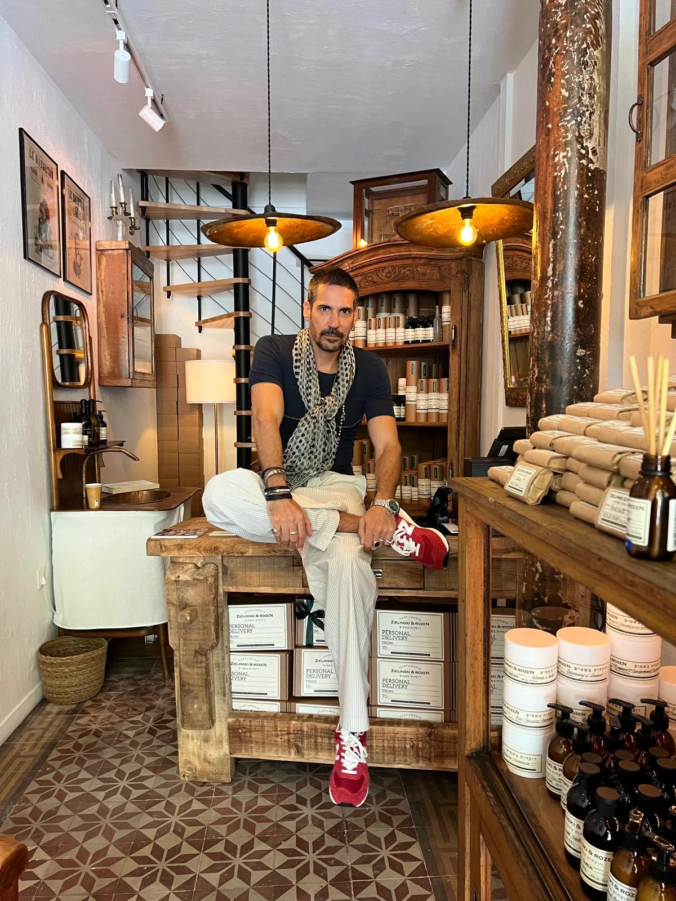
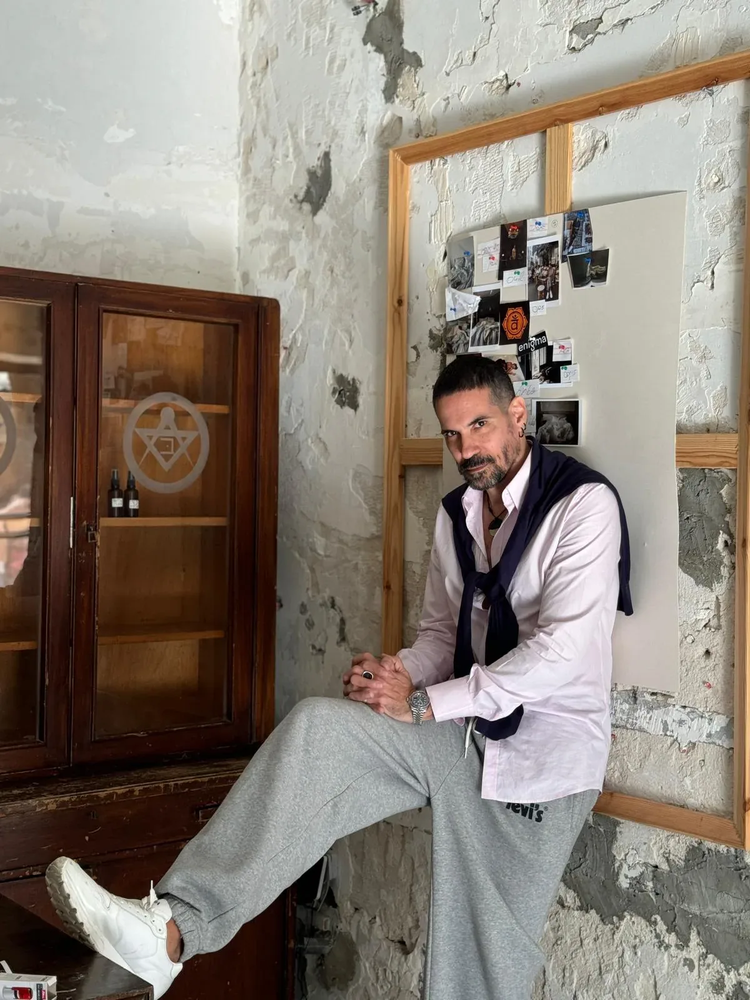
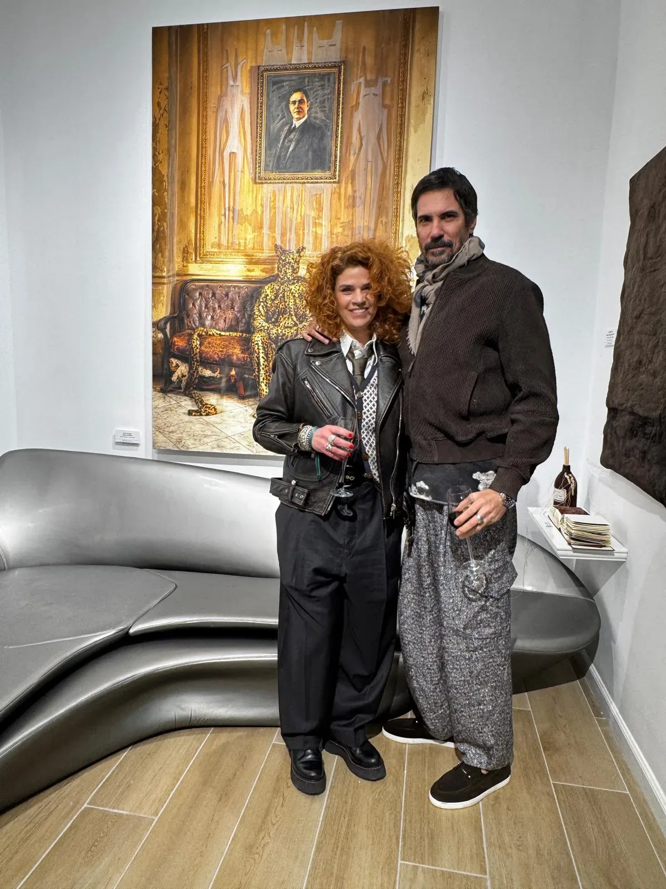
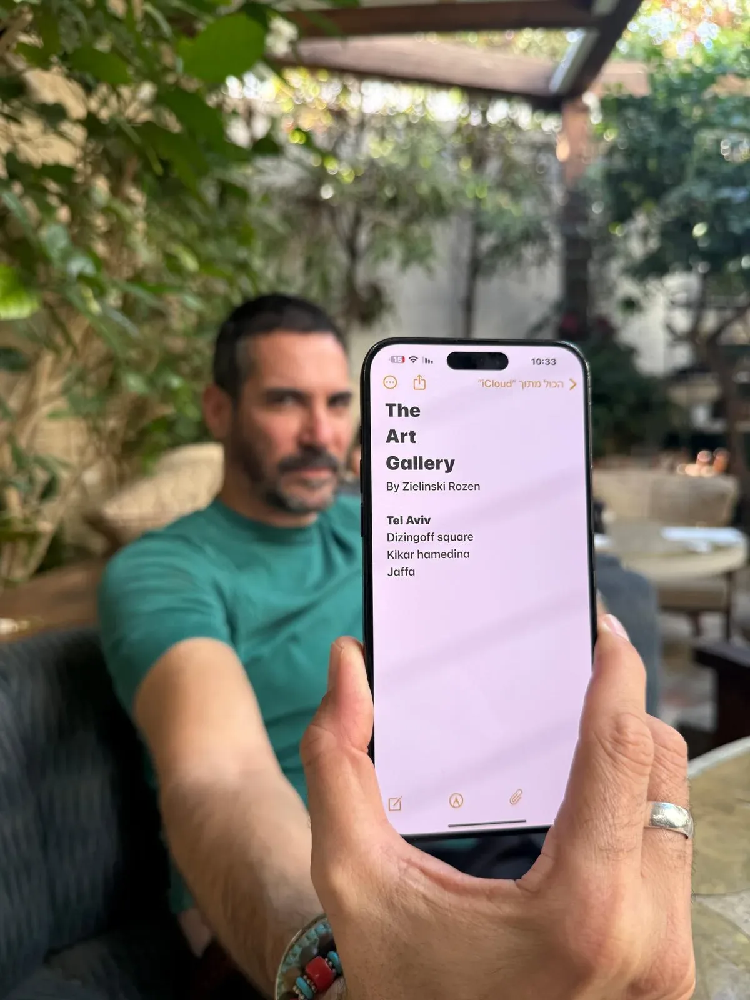
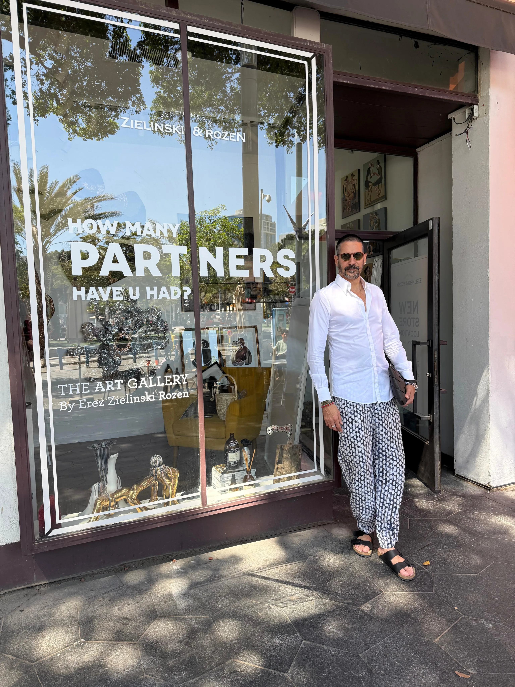
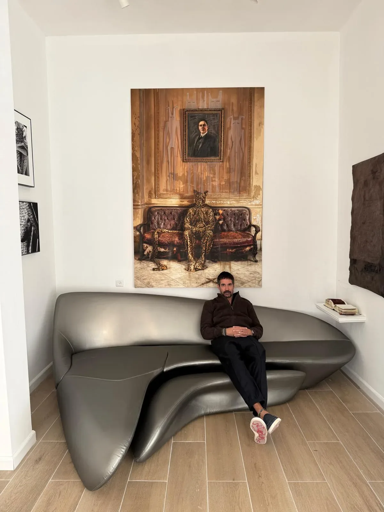
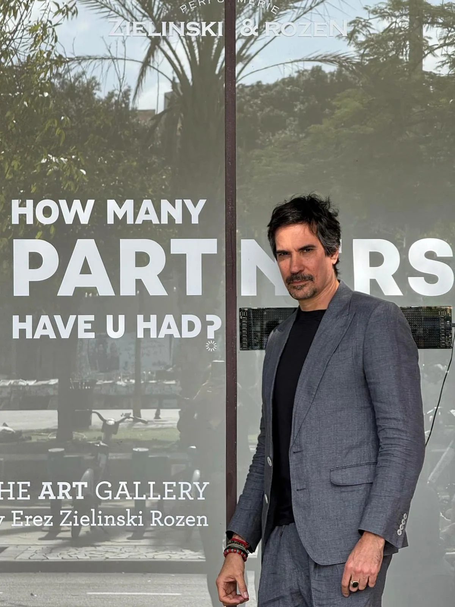

Make you feel like Art
אומנות שוברת מוסכמות ויצירה חדשה היא חלק בלתי נפרד מהמותג זילינסקי רוזן.
הצורך בהתפתחות תמידית, מחשבה שונה ויציאה מהקופסא הוא חלק הכרחי בהתפתחות האנושית
ולכן חשוב לנו לעודד ולתמוך באמנים ואומניות צעירים המביאים בשורה חדשה, כמו הבשמים שלנו.






ארז זילינסקי–רוזן הוא קודם כול אמן.
לפני שהוא רוקח, לפני שהוא יזם — הוא יוצר.
עולם הבישום עבורו הוא קנבס בלתי נראה שנבנה משכבות של רגש וזיכרון.
הוא עובד מתוך אינטואיציה טהורה — ממצב רוח, מחוויות, מהחיים עצמם. כל בושם שהוא יוצר הוא יצירת אמנות, עם סיפור , עם צבע,
עם פעימה.
בדיוק כמו שהבשמים נולדים מתוך דיאלוג של רגש וחומר, כך גם הגלריות של ארז הן מקום שבו האמנות מתרחשת, זזה ומתפתחת ,
באופן שממשיך את מהות המותג : ריח כיצירה, יצירה כבית.
הגלריות פועלות ללא מטרות רווח — כל ההכנסות ממכירת היצירות בתערוכה מועברות ישירות לאמניות ולאמנים.
הגלריות פועלות מתוך מטרה מוצהרת לייצר חשיפה משמעותית לאמנות ישראלית עכשווית ולאפשר מפגש ישיר ובלתי אמצעי בין
יוצרים לקהל.
הקשר של ארז לאמנות אינו רק השראה:
"אמנות היא חלק בלתי נפרד מהמותג,
היא שוברת מוסכמות, מרחיבה גבולות
ומאפשרת חופש.
אותו החופש שמוביל אותי בבישום, הוביל אותי לפתוח את הגלריות החדשות — מרחבים שמכילים יצירה חיה ונושמת, אמנים, פרשנות אישית, ומפגש בין ניחוח ליצירה חזותית."
רוקחות בשמים היא עבורי כמו לצייר על קנבס ריק,
כמו לכתוב סיפור מרתק או להלחין סימפוניה סוחפת.
כל בושם הוא יצירת אומנות בפני עצמה, שילוב עוצמתי של ניחוחות המעוררים רגשות, זיכרונות ותחושות.
זו אמנות שבה חומרי הגלם הם המילים, והניחוח הוא הסיפור. כמו בכל יצירת אומנות, גם לבושם יש סגנונות שונים, וכל אחד תופס אותנו ומפרש אותנו בצורה ייחודית.
אני לא יכול להשאיר אדיש לבושם. כמו שיר של אדית פיאף, הוא סוחף אותי, מעורר בי רגשות, אסוציאציות וזיכרונות.
to affect you to the depths
of your soul,
to speak about the personality,
to reflect its uniqueness.
The scent can tell a lot.
who we are, how we feel,
how we think, how we behave.
It also reveals those facets
that we, perhaps,
did not notice in ourselves before.
Every ingredient and
every moment counts…